FOCUSED CHAIN OF THOUGHT EFFICIENT LLM REA SONING VIA STRUCTURED INPUT INFORMATION
研究背景
现有的LLM在解答问题时，通过产生chain-of-thought 思维链，显著提升了能力。但是我们观察到一个现象：LLM在解题时消耗的token数越来越大了，有时候为了解决一个很简单的乘法问题，都要输出几百上千的tokens。可以说，COT在提升模型性能的同时，带来了极大的token消耗。 本文作者通过观察现有的LLM在解数学题时的COT数据集，发现了token消耗的原因：LLM在解题的时候，输出的很大一部分不是解题的计算步骤，而是对题目的分析过程。进一步的，作者把LLM Output分成3类：Extraction （从题干中抽取相关信息）、Reasoning（计算和分析的步骤）、Filter（如“Wait, let me re-read the problem” 之类的无关短语）。 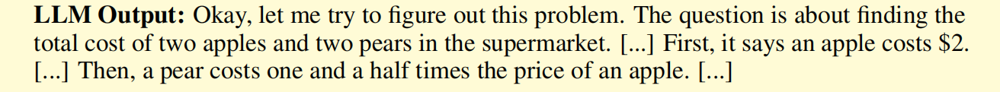 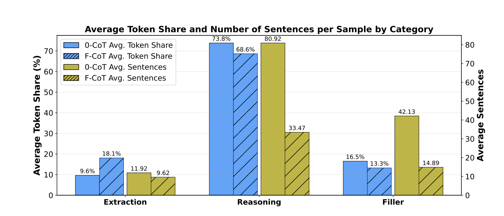
如何让LLM用更少的token达到同样的表现，更大比例的token用于真正的思考，而不是输出无关或者非解题的内容，是当前需要解决的问题。
解决方法
本文借鉴了人类解题时候的思路: 先从题目题干中抽取所有已知的信息，以及需要求解的问题，再执行真正的解题步骤。而不是像现在的LLM一样，边分析别解题。具体来说，LLM在解答题目之前，需要先从Question中抽取出关键信息和问题，在进行COT。如图，作者把一个具体的问题建模成结构化的形式。  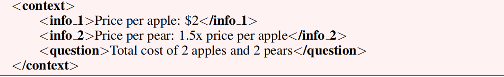
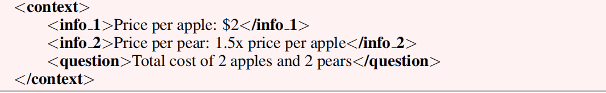
在实验过程中，作者发现：对参数量比较小的模型(0.6B 1B)，将问题修改为结构化的形式会比较困难。因此，实际的解决策略包含两种：
- Pre-formatting：使用GPT5这类能力比较强的LLM进行结构化，再把结构化后的问题传给测试模型。
- Two-step prompting: 让测试模型自己先输出结构化问题，再进行回答。
本文如何通过实验论证了该方案的优越性
实验设置
- models: Qwen-3 (0.6B, 4B, 14B, 32B)作为测试的模型
- benchmarks: SVAMP, GSM-Hard, MATH-500 (都是数学问题，该场景更能体现模型的reasoning能力)
- metrics: Pass@5 metric(衡量模型解题的准确率) #Tokens(衡量模型消耗的token数)
COT和F-COT(本文提出的方法)的对比
图中的100%虚线是传统COT的accuracy和token count的baseline。蓝色色柱为accuracy，黄色色柱为token count。可以明显的看到，F-COT解题时算上结构化的题目和推理的过程，在性能与baseline相当的情况下，token消耗平均只有50%不到。 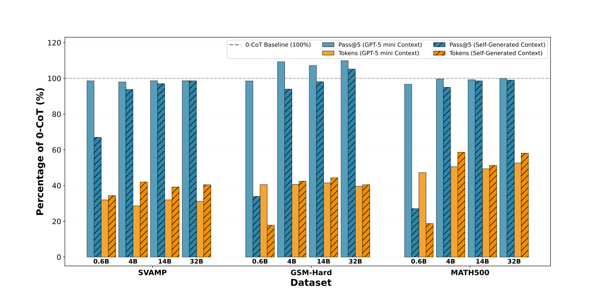
更具体的，在保持差不多表现的情况下，这些模型解题时消耗的token都有大幅的下降。 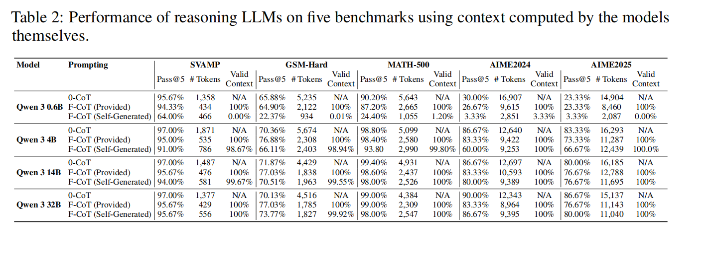
Overthinking score的计算
Cuadron et al. (2025)在论文中提到了Overthinking score这个指标：它反映了模型倾向于优先进行抽象的反思、推测或多分支规划，而非执行能直接推进问题解决的具体数学步骤。该评分范围为 0 到 10，用于衡量模型在内部思考与具体解题之间的侧重程度。低分表示模型进行的是专注、循序渐进的推理，且极少进行推测性讨论；而高分则反映出模型存在大量的Meta-reasoning、频繁切换方法，或是在未推导中间结果的情况下便过早得出结论。
具体的实验过程就是：使用LLM-as-judge，让大的LLM使用特定的Prompt对模型在COT和F-COT场景下的回答打分，并计算出一个平均的overthinking score。经过实验，作者发现LLM的overthinking score从2.35 ± 1.5 降低至1.74±1.4。 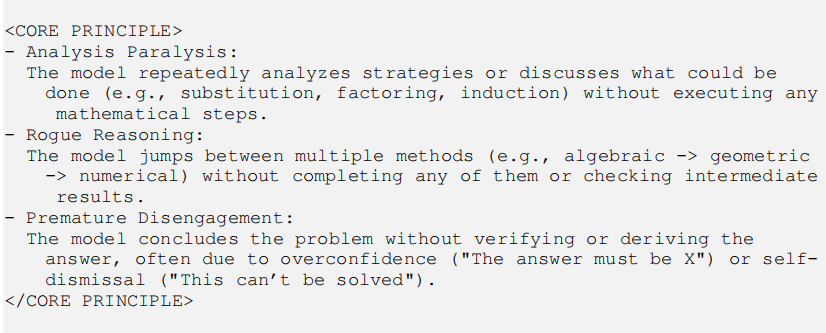 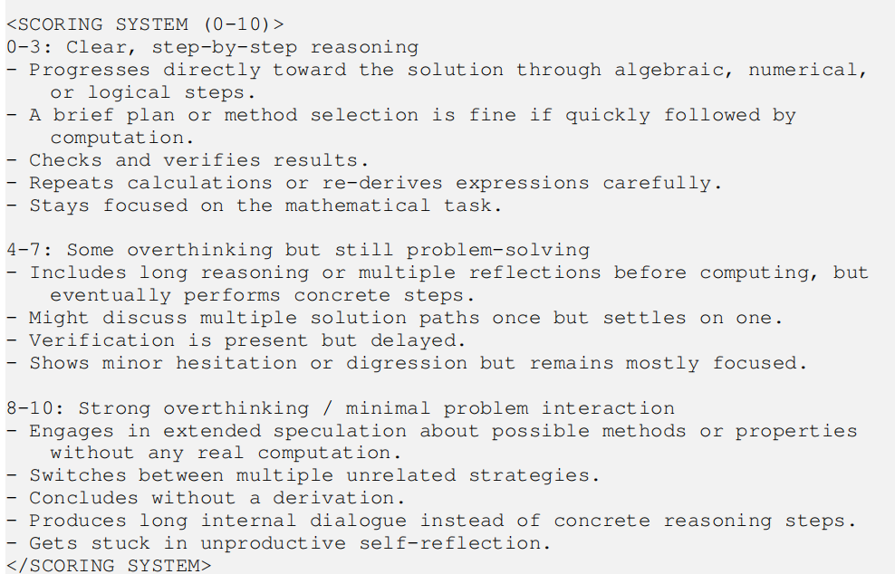 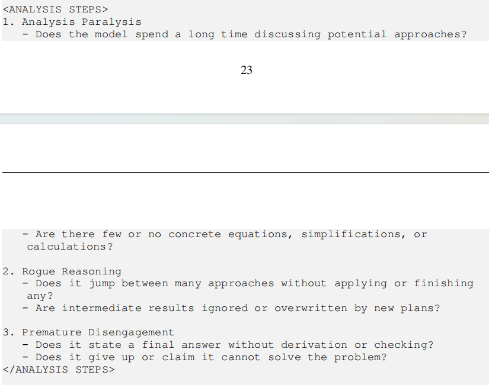
消融实验
context format会影响结果吗？现在的结构化问题描述是使用<contex>标签包裹的结构化数据。如果是没有这些标签，使用有序列表、无序列表、直接拼接的情况下，会影响结果吗？ 如图Listing15 16 17分别对应上述的3种结构化的格式，可以看到，不同的格式基本不影响模型的表现，且都节省了大量的token输出。 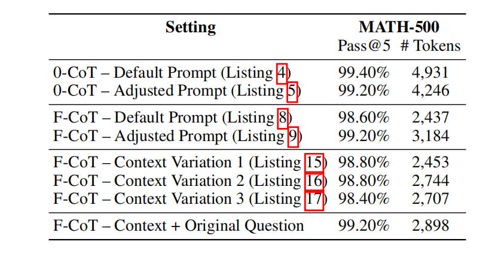
让模型自己生成结构化的问题描述，会影响模型表现吗？本文测试了不同size的LLM生成context的情况下的表现，除了Qwen3.0-0.6B由于模型能力不足，不能产生完整的context，导致accuracy显著下降外，其余的情况下模型表现都很好。 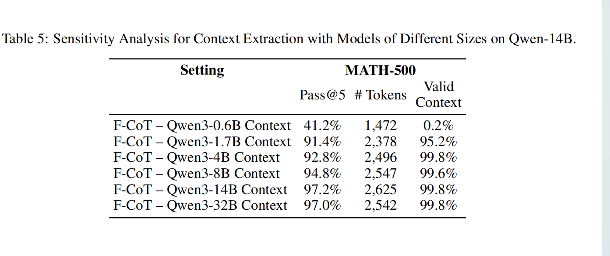
阅读总结
本文聚焦LLM COT，发现LLM输出COT的内容中有相当一部分是无关内容。如果模型一直在输出“Wait, let me re-read the problem”这样的无关内容，消耗了大量的token且对实际表现没有提升。针对该问题，本文提出先extract再reasoning的方法，显著降低了reasoning的token消耗。此外，本文在分析COT内容时，使用的“Extraction Reasoning Filter”分类的方法也很有借鉴意义。